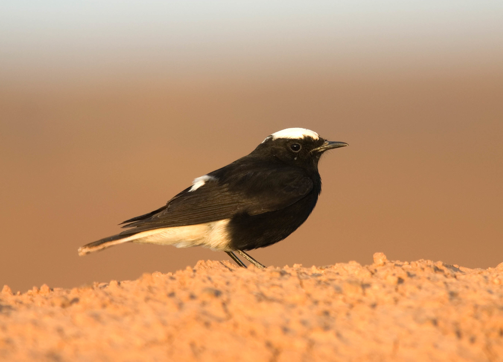

Oenanthe leucopyga
Un oiseau des rochers dont la tête n'est pas toujours blanche
Le Traquet à tête blanche, Oenanthe leucopyga, compte parmi les oiseaux les plus frappants des déserts rocheux. Chez de nombreux adultes, une calotte blanche surmonte le corps sombre, tandis que le croupion et la queue clairs apparaissent pendant les déplacements. Ses noms arabes évoquent la couronne ou la calotte blanche ; des noms locaux comme Umm Ghunayman existent en Arabie saoudite. Ce membre des Muscicapidae mesure environ 17–19 cm. Malgré une ressemblance superficielle, ce n'est pas le Traquet rieur, Oenanthe leucura.
Le nom peut tromper l'observateur : les jeunes et les oiseaux dans leur première année ont la tête noire, et certains individus plus âgés conservent une calotte sombre. L'absence de blanc n'exclut donc pas l'espèce, et une tête noire ne permet pas à elle seule de préciser l'âge. Les sexes se ressemblent globalement ; une photographie ordinaire ne suffit pas toujours à les distinguer. En novembre, ces nuances sont importantes lorsque des oiseaux d'âges différents fréquentent le même habitat.
Dans les cas difficiles, regarder la queue avant la calotte
Le noir descend sur les parties inférieures jusqu'à la zone située entre les pattes, tandis que le bas du ventre et les sous-caudales restent blancs. La queue est largement blanche, avec beaucoup de noir sur les rectrices centrales, mais sans la bande terminale noire continue caractéristique du Traquet rieur. Les jeunes peuvent présenter de petites extrémités sombres sur les rectrices externes : la formule « queue entièrement blanche » serait donc un raccourci trompeur. Observer la queue déployée au moment où l'oiseau se pose est particulièrement utile.
Le mâle du Traquet à capuchon, Oenanthe monacha, présente un contraste de couleurs et un dessin caudal proches, mais le blanc de son ventre remonte nettement plus haut. Le Traquet à tête blanche conserve une zone noire plus étendue sur le dessous du corps. L'éclairage peut aussi rendre terne un plumage normalement brillant. Une bonne identification combine donc l'étendue du noir, la silhouette, le dessin de la queue et l'âge possible, plutôt que la seule couleur de la tête.
Une vaste aire désertique arabe, mais discontinue
L'aire traverse des secteurs rocheux de l'Afrique du Nord vers le Sinaï, le Levant et la péninsule Arabique. Le Maroc, la Mauritanie, l'Algérie, la Tunisie, la Libye et l'Égypte appartiennent à ce vaste ensemble désertique, avec un prolongement africain vers le Soudan. Les milieux favorables restent néanmoins discontinus : montagnes, oueds et bâtiments peuvent offrir ce qui manque aux grandes étendues de sable. La densité varie selon les régions ; une surface colorée sur une carte ne signifie pas que chaque portion du désert est occupée.
En Arabie saoudite, les références régionales décrivent un nicheur résident largement répandu dans des secteurs occidentaux et certaines parties des plaines centrales, de l'escarpement du Tuwaiq et de la bordure du Summan. Jordan BirdWatch le classe aussi parmi les résidents de Jordanie. Il est également résident dans certaines parties de la Palestine et du Sinaï. Une observation dans un pays voisin relève d'une autre question : on ne peut généraliser cette sédentarité à tous les États du Golfe, ni transformer une donnée rare en limite d'aire en population nicheuse permanente.
Sédentarité et déplacements en automne
L'espèce est principalement sédentaire, mais peut effectuer des déplacements locaux ou de faible distance, y compris en hiver. Une observation en novembre dans son habitat rocheux habituel ne prouve donc pas l'arrivée d'un migrateur européen. Tous les individus ne suivent pas un calendrier identique. La sédentarité signifie le maintien de l'espèce dans une région, non la présence de chaque oiseau sur le même rocher toute sa vie. Démontrer un déplacement individuel demande du baguage ou un suivi, pas seulement une différence entre deux comptages.
Un article publié dans Sandgrouse en 2019 décrit certaines observations hors de l'aire principale, notamment des apparitions rares en Iran et ailleurs dans la région. Ces cas éclairent les possibilités de dispersion, sans établir une expansion durable. Lors d'une rencontre inhabituelle, des photographies nettes, la date et la description du milieu sont plus utiles qu'une affirmation immédiate de résidence. La reproduction exige une preuve distincte, comme le transport de nourriture vers des jeunes ou l'observation de poussins.
Un milieu rude et une nourriture variée
Le Traquet à tête blanche privilégie les pentes pierreuses, les falaises, les oueds secs, les terrains volcaniques et les espaces arides crevassés. Il peut profiter de vieux murs ou des abords de villages et d'oasis lorsque les bâtiments reproduisent les cavités rocheuses et offrent des perchoirs de chasse. Ce n'est pas un spécialiste des dunes. L'étiquette « désert » ne suffit donc pas à prévoir sa présence : une pierre élevée, une fente ombragée et un espace ouvert déterminent concrètement les possibilités de se nourrir et de s'abriter.
Il surveille le sol depuis un perchoir avant de descendre sur une proie, recherche aussi sa nourriture en marchant ou en sautillant et capture parfois un insecte en vol. Son régime comprend coléoptères, fourmis, mouches, araignées et autres invertébrés, mais aussi fruits, graines et occasionnellement petits reptiles selon les ressources. Cette souplesse ne rend pas indispensable la nourriture humaine. Garder un site naturel est préférable aux miettes laissées près d'une route ou d'un campement, où elles peuvent attirer les oiseaux vers les véhicules ou les exposer davantage aux chats.
Le nid et les œufs : utiliser les fissures
Les couples nichent dans des cavités rocheuses, sous de grosses pierres ou dans de vieux murs. Le nid en coupe est fait de matériaux végétaux, avec une garniture de poils, de laine et de plumes. Des cailloux peuvent être déposés à l'entrée ou sur le chemin d'accès. Ce comportement connu chez les traquets n'autorise pas à ouvrir la cavité ou à déplacer les pierres pour vérifier la présence d'œufs. L'aménagement fait partie du travail de l'oiseau et peut être utilisé malgré un calme apparent.
Les références situent généralement la reproduction entre la fin de l'hiver et le printemps, avec des variations selon la région et les conditions. Le compte rendu saoudien mentionne 3–4 œufs et environ 14–15 jours d'incubation ; les références portant sur l'ensemble de l'aire indiquent aussi la possibilité de 3–5 œufs. La femelle construit et couve, tandis que les deux parents s'occupent des jeunes. Ces différences rappellent qu'un nombre ou un mois ne doit pas devenir une règle rigide pour tous les déserts arabes.
De l'éclosion à l'indépendance
Après l'éclosion, les poussins ont besoin de nourriture et de protection dans la cavité. La synthèse saoudienne indique environ 14–16 jours au nid et la possibilité de deux nichées dans une saison. Le départ du nid ne marque pas une indépendance immédiate, car les soins parentaux se poursuivent. Des oiseaux à tête noire dans leur première année peuvent eux-mêmes se reproduire : c'est une raison supplémentaire de ne pas confondre toute calotte sombre avec un jeune récemment envolé et trop immature pour nicher.
La réussite dépend de ressources alimentaires disponibles au moment où les poussins en ont besoin. Un oued ayant reçu de la pluie peut offrir des conditions différentes d'un site voisin resté sec, sans que la pluie seule permette de déduire la présence d'un nid. Après la reproduction, les jeunes peuvent se disperser ; les habitats rocheux et les abris restent précieux toute l'année. Protéger fissures et murs concerne donc aussi les lieux de repos et les possibilités futures de nidification, pas seulement les jours où ils abritent des œufs.
Préserver le milieu et observer sans dérangement
AviList v2026 classe l'espèce en Préoccupation mineure, LC, à l'échelle mondiale. Ce statut ne mesure toutefois pas l'état de chaque oued ou village désertique. Enlever des rochers, combler des fissures, démolir un mur occupé ou circuler hors des pistes peut modifier une ressource locale réduite mais importante. La restauration d'un bâtiment ou l'aménagement touristique d'un site devrait vérifier son utilisation par la faune, plutôt que considérer un paysage aride comme dépourvu de vie.
L'observateur reste à distance et laisse l'oiseau poursuivre sa recherche de nourriture. Il cesse d'approcher si les alarmes se répètent ou si l'oiseau s'éloigne à chaque tentative. La repasse et les appâts ne sont pas nécessaires à une photographie. Les observations inhabituelles se documentent par le dessin caudal, l'étendue du noir et le comportement, non par une image de la calotte seule. La résidence dans un pays ne signifie pas une autorisation de chasse : réglementation locale et protection des sites de reproduction restent distinctes de la classification scientifique.
Photo : Tero Linjama / iNaturalist (CC0 1.0)